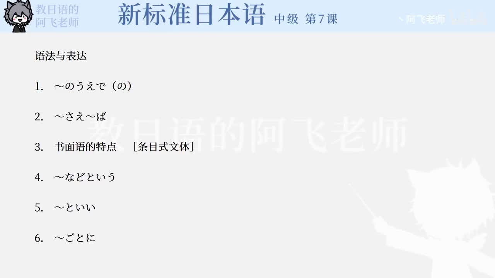

Bilibili P137 · Reading Text
電子メールの作法
从一封给客户的企划案邮件出发，学习商务邮件的件名、称呼、寒暄、正文请求、结尾致意、署名，以及说明文中的规则表达。
全篇听力精讲
按邮件和说明文分段轮播。每段依次播放日语、中文、结构、语法和商务写作提醒。
商务邮件四层结构
件名用一行说明邮件目的，避免寒暄型标题。
宛先与称呼公司、部门、姓名、様，先把收件人写清楚。
正文请求先说明企划案已完成，再提出拜访和确认日程。
结尾与署名礼貌收束，并附公司、部门、姓名和邮箱。
邮件范例拆开看
Subject「金星」キャンペーンの企画案
To竜虎酒造株式会社「金星」販売促進企画部 佐藤光一様
Openingいつもお世話になっております。JC企画の王です。
Request企画案ができました。早く説明に伺いたいので、ご予定とご都合を教えてください。
Signature株式会社JC企画 上海支社 王風 wangf@jckikaku.cn
说明文规则链
1 · 件名明确用件を明確にする
2 · 宛先姓名忘れずに入れる
3 · 用件简洁簡潔に書く
4 · 最后署名署名を付ける
逐句精读
重点语法与邮件表达
课文词汇与固定搭配
练习与复习
来源说明：视频标题、时长、CID 和首帧来自 Bilibili 公开视频接口；课文原文来自本地《新标准日本语》中级第7课教材数据，并修正少量明显录入误差用于学习。